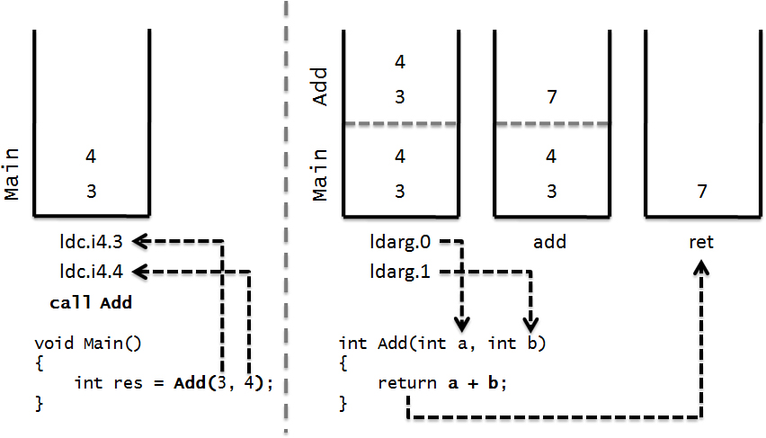
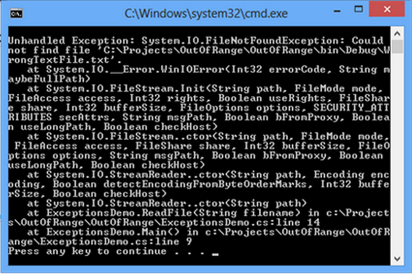
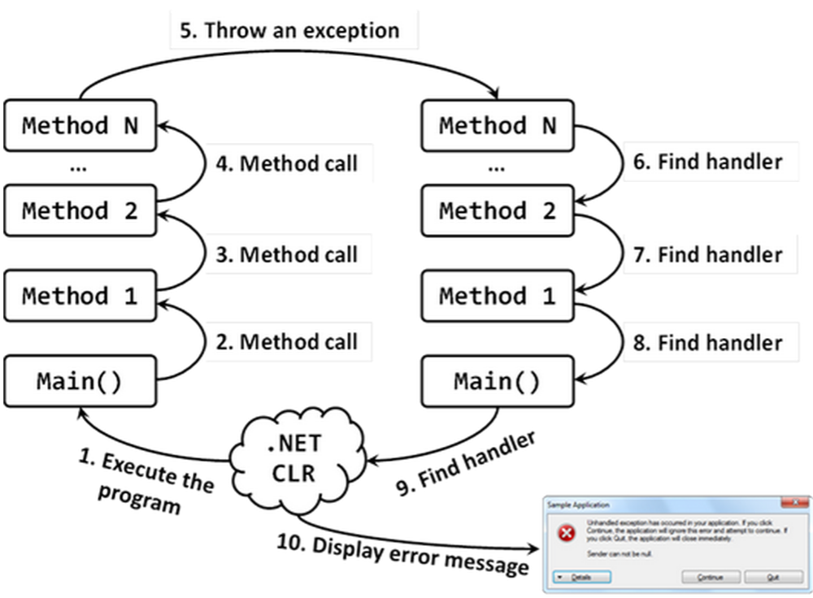

val int : value:'T -> int (requires member op_Explicit)
Full name: Microsoft.FSharp.Core.Operators.int
--------------------
type int = int32
Full name: Microsoft.FSharp.Core.int
--------------------
type int<'Measure> = int
Full name: Microsoft.FSharp.Core.int<_>
C# course
Lecture 4
Flow Control, exceptions
Boolean logic
The bool type can hold one of only two values: true or false.
1:
|
bool == Boolean
|
Operators
Relational Operators

Logical Operators

Branching
- the ternary operator
- the if statement
- the switch statement
The ternary operator
1:
|
<test> ? <resultIfTrue> : <resultIfFalse>
|
The if statement
1: 2: 3: 4: 5: 6: |
if (<test1>) {
<code executed if <test1> is true>; }
else if (<test2>) {
<code executed if <test2> is true>; }
else {
<code executed if <test1> and <test2> is false>; }
|
The switch statement
1: 2: 3: 4: 5: 6: 7: 8: 9: 10: 11: 12: 13: 14: 15: |
switch (<testVar>) {
case <comparisonVal1>:
<code to execute if <testVar> == <comparisonVal1> >
break;
case <comparisonVal2>:
case <comparisonVal3>:
<code to execute if <testVar> == <comparisonVal2>
or <testVar> == <comparisonVal3>>
break;
case <comparisonValN>:
<code to execute if <testVar> == <comparisonValN> >
break;
default: //optional
<code to execute if <testVar> != comparisonVals>
break; }
|
Looping
"Looping" refers to the repeated execution of statements.
do loops
1: 2: 3: 4: |
do
{
<code to be looped> // <- will be executed at least once
} while (<Test>);
|
while loops
1: 2: 3: 4: |
while (<Test>)
{
<code to be looped>
}
|
for loops
1: 2: 3: 4: |
for (<initialization>; <condition>; <operation>)
{
<code to loop>
}
|
foreach loops
Foreach loops can use "duck typing".
Collection's type must contain public method "GetEnumerator" to work with foreach loops. (minimal requirement)
1: 2: 3: 4: |
foreach (<type> <identifier> <expression>)
{
<code to loop>
}
|
Return statement
1: 2: 3: 4: 5: |
void PrintName(string name)
{
if (name == null) return;
Console.WriteLine(name);
}
|
1: 2: 3: 4: 5: |
int Add(int a, int b)
{
return a + b;
}
|

Yield return statement
Yield return allows to build custom itterators and allows the creation of code blocks that produce data on demand.
1: 2: 3: 4: 5: 6: 7: 8: 9: 10: 11: 12: 13: |
static IEnumerable<int> LazyPrimes() {
for (int n = 2; n <= int.MaxValue; n++) {
bool isPrime = true;
for (int d = 2; d <= Math.Sqrt(n); d++) {
if (n % d == 0) {
isPrime = false;
break;
}
}
if (isPrime)
yield return n; // Yield primes to the caller one-by-one
}
}
|
Errors handling
Exception is a notification that something interrupts the normal program execution.
Exceptions - object-oriented approach to errors handling. Exceptions represented with objects.

Example Code Throwing an Exception
1: 2: 3: 4: 5: 6: 7: 8: 9: 10: 11: 12: 13: 14: 15: 16: |
class ExceptionsDemo
{
static void Main()
{
string fileName = "WrongTextFile.txt";
ReadFile(fileName);
}
static void ReadFile(string fileName)
{
TextReader reader = new StreamReader(fileName);
string line = reader.ReadLine();
Console.WriteLine(line);
reader.Close();
}
}
|
Result

Catching Exception in C#
After a method throws an exception, CLR is looking for an exception handler that can process the error.

Throwing/Catching Exceptions
The try-catch Programming Construct
1: 2: 3: 4: 5: 6: 7: 8: 9: |
try {
// Some code that may throw an exception
}
catch (ExceptionTypeA objectNameA) {
// Code handling an ExceptionA
}
catch (ExceptionTypeB objectNameB) {
// Code handling an ExceptionB
}
|
Throwing Exceptions (the throw Construct)
Exceptions in C# are thrown using the keyword throw. We need to provide an instance of the exception, containing all the necessary information about the error.
1: 2: 3: 4: 5: |
static void Main()
{
Exception e = new Exception("There was a problem");
throw e;
}
|
Output
Unhandled Exception: System.Exception: There was a problem at Exceptions.Demo1.Main() in Program.cs:line 11
Re-Throwing Exceptions
There are two possible scenarious when re-throwing exceptions:
The Exception Class
1: 2: 3: 4: 5: 6: 7: 8: 9: 10: 11: 12: 13: 14: 15: 16: 17: |
[ComVisibleAttribute(true)]
[ClassInterfaceAttribute(ClassInterfaceType.None)]
public class Exception : ISerializable, _Exception
{
public Exception();
public Exception(string message);
public Exception(string message, Exception innerException);
public virtual IDictionary Data { get; }
public virtual string HelpLink { get; set; }
protected int HResult { get; set; }
public Exception InnerException { get; }
public virtual string Message { get; }
public virtual string Source { get; set; }
public virtual string StackTrace { get; }
public MethodBase TargetSite { get; }
public virtual Exception GetBaseException();
}
|